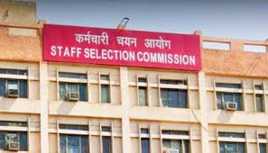

Staff Selection Commission (SSC) is an organisation under Government of India to recruit staff for various posts in the various Ministries and Departments of the Government of India and in Subordinate Offices This commission is an attached office of the Department of Personnel and Training (DoPT) which consists of Chairman, two Members and a Secretary-cum-Controller of Examinations. His post is equivalent to the level of Additional Secretary to the Government of India
The Estimates committee in the Parliament recommended the setting up of a Service Selection Commission in its 47th report (1967–68) for conducting examinations to recruit lower categories of posts. Later, in the Department of Personnel and Administrative Reforms, on 4 November 1975 Government of India constituted a commission called Subordinate vice Commission. On 26 September 1977, Subordinate Services Commission was renamed as Staff ection Commission.